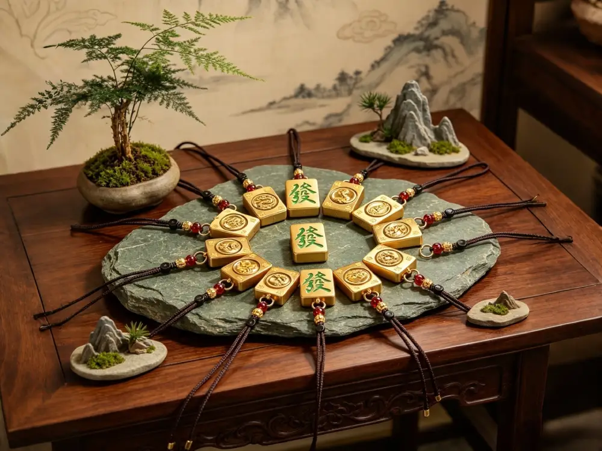
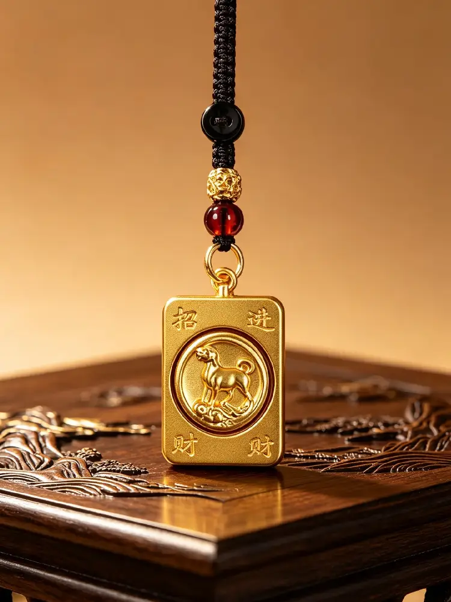
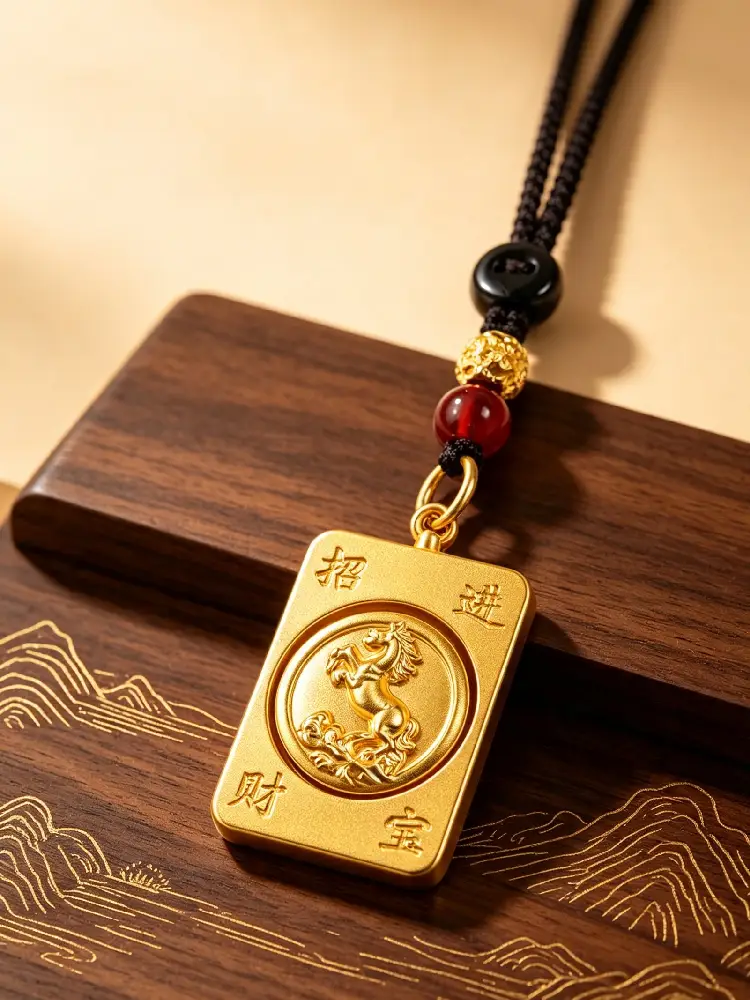
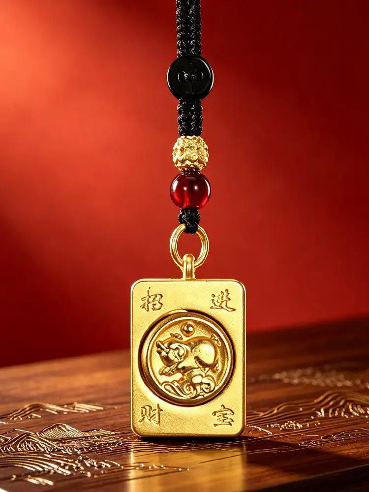
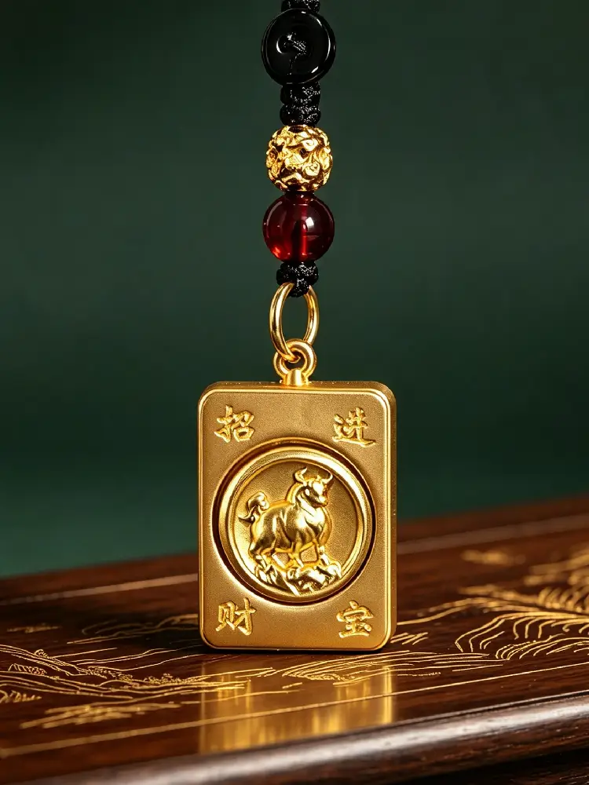

Im alten Ostchina beobachteten die Menschen den Lauf von Sonne und Mond und den Wechsel der Jahreszeiten. Sie entdeckten, dass natürliche Rhythmen etwa alle zwölf Jahre einen vollständigen Zyklus durchlaufen. Also wählten sie zwölf repräsentative Kreaturen und etablierten das chinesische Tierkreissystem — eine seit Jahrtausenden überlieferte Zeitmesstradition und ein tief poetisches Symbol innerhalb der klassischen östlichen Kultur.
Zwölf Tiere entsprechen zwölf Jahren. Jedes Geburtsjahr wird einem bestimmten Tierkreiszeichen zugeordnet, und der Zyklus wiederholt sich alle zwölf Jahre — ähnlich dem Wechsel der Jahreszeiten und der Bewegung der Sterne — geordnet und doch voller Leben. Genau deshalb findet der chinesische Tierkreis über Grenzen und Kulturen hinweg Anklang: Die Zeitmessung durch lebende Wesen ist ein universeller Ausdruck menschlicher Vorstellungskraft.
Viele Menschen fragen sich: Warum wählten die Alten letztendlich die Ratte, den Ochsen, den Tiger, das Kaninchen, den Drachen, die Schlange, das Pferd, die Ziege, den Affen, den Hahn, den Hund und das Schwein — und nicht andere Tiere?
Diese Auswahl war nicht willkürlich. Sie beruhte auf tausendjährigen Beobachtungen der Natur und des täglichen Lebens. Die Alten unterteilten Tag und Nacht in zwölf zweistündige Perioden und ordneten jedes Tier gemäss seiner aktivsten Stunden zu — darunter Haustiere, Wildtiere und sogar ein Fabelwesen — und spiegelten so die ganze Bandbreite des Lebens wider.
Ratte (Zi): In der tiefen Nacht, wenn alles still ist, sind Ratten am aktivsten — die lebhaftesten Geschöpfe in den dunklen Stunden.
Ochse (Chou): In den frühen Morgenstunden wiederkäuen Ochsen. Als wichtigster Partner der Landwirtschaft verkörpern sie Kultivierung und Ausdauer.
Tiger (Yin): In der Dämmerung streifen Tiger umher und jagen — der majestätische Herrscher der Wildnis.
Kaninchen (Mao): Bei Tagesanbruch kommen Kaninchen hervor, um zu grasen. Sanft und ruhig, spiegeln sie das friedliche Licht des Morgens wider.
Drache (Chen): Wenn Nebel aufsteigt und Regen fällt, glaubte man, dass der mythische Drache Wolken und Regen beherrscht – das einzige legendäre Wesen unter den zwölf.
Schlange (Si): Wenn die Temperaturen am Vormittag steigen, kommen Schlangen aus ihren Höhlen und spüren die Wärme der Erde.
Pferd (Wu): Am Mittag galoppieren Pferde mit Kraft – sie symbolisieren die grenzenlose Lebenskraft.
Ziege (Wei): Am Nachmittag, wenn das Gras am frischesten ist, grasen Ziegen gemächlich – sie gedeihen im Überfluss der Natur.
Affe (Shen): Wenn die nachmittägliche Hitze nachlässt, spielen und schwatzen Affen im Wald – lebhaft, klug und voller Geist.
Hahn (You): In der Abenddämmerung kehren die Hähne in ihre Ställe zurück. Die Alten verliessen sich auf ihren Ruf, um die Tageszeit zu bestimmen.
Hund (Xu): Am Abend, wenn in den Häusern Lichter angehen, stehen Hunde Wache – sie beschützen den Frieden der Nacht.
Schwein (Hai): Spät in der Nacht schlafen Schweine fest – sie stehen für Komfort, Zufriedenheit und ein Leben in Leichtigkeit.
Darüber hinaus gibt es eine tiefere philosophische Ebene: Diese zwölf Kreaturen umfassen Vögel, Tiere, Wildtiere, Haustiere und Fabelwesen – jedes mit einem eigenen Charakter. Manche sind sanft, manche mutig, manche klug, manche ruhig. Zusammen spiegeln sie die Vielfalt der menschlichen Natur wider. Die Alten erinnerten uns damit: Jedes Wesen hat seine einzigartige Gabe, und jeder Mensch hat seine eigenen Stärken.
Hinweis: Die Volkserzählung vom Tierkreisrennen ist eine beliebte Legende; die auf Zeitbeobachtung basierende Erklärung wird von Gelehrten als historischer Ursprung weithin anerkannt.

Bildunterschrift: Aus goldfarbener Legierung gefertigt und in Form einer klassischen Mahjong-Steinplatte gestaltet, zeigt dieser kompakte Anhänger ein dreidimensionales Relief des Tierkreiszeichens auf der Vorderseite, während die Rückseite das traditionelle chinesische Schriftzeichen «發» (Wohlstand) trägt – ein zeitloses Symbol für Glück und Überfluss.
Ratte: Geistesgegenwärtig und wachsam – symbolisiert die Entdeckung von Reichtum und neuen Chancen.
Ochse: Standhaft und fleissig – repräsentiert die Belohnung, die aus anhaltender Anstrengung erwächst.
Tiger: Mutig und beschützend – symbolisiert Tapferkeit und die Bewahrung des Friedens.
Kaninchen: Sanft und beruhigend – repräsentiert ein friedliches, glückliches und reibungsloses Leben.
Drache: Ein ikonisches Glückssymbol – repräsentiert Wachstum, Fortschritt und aufstrebenden Erfolg.
Schlange: Wahrnehmungsfähig und gelassen – symbolisiert Weisheit und Ruhe angesichts von Herausforderungen.
Pferd: Energisch und leidenschaftlich – repräsentiert Vorwärtsdynamik und die Erfüllung von Zielen.
Ziege: Freundlich und warmherzig – symbolisiert Harmonie, Vollständigkeit und dauerhafte Segnungen.
Affe: Klug und optimistisch – repräsentiert Anpassungsfähigkeit und die Fähigkeit, Sorgen loszulassen.
Hahn: Diszipliniert und positiv – symbolisiert Helligkeit, Glück und eine hoffnungsvolle Zukunft.
Hund: Loyal und zuverlässig – repräsentiert dauerhafte Sicherheit, Begleitung und stetigen Fortschritt.
Schwein: Grosszügig und zufrieden – symbolisiert Überfluss, Komfort und ein Leben in Leichtigkeit.
Dieser Tierkreisanhänger ist in Form einer klassischen chinesischen Mahjong-Steinplatte gestaltet – quadratisch mit abgerundeten Ecken, was die traditionelle östliche Ästhetik von Ausgewogenheit und Ordnung widerspiegelt. Die Oberfläche weist dreidimensionale Reliefkunst auf, und die mittlere Scheibe kann frei gedreht werden, was den schönen Segen der «Wendung des Glücks» trägt. Das drehbare Design spiegelt auch den zwölfjährigen Zyklus des Tierkreises wider.
Form und Design: Der Anhänger ist dem klassischen Mahjong-Stein nachempfunden – mit einer Grösse von 2,2 cm × 3,5 cm und einer Dicke von 1 cm. Kompakt und zart, spiegelt seine ausgewogene Form die traditionelle östliche Ästhetik von Stabilität und Anstand wider. Alle zwölf Tierkreisdesigns können in einer kreisförmigen Anordnung präsentiert werden, was eine visuell symmetrische und modern-chinesische Atmosphäre schafft.
Handwerkliche Details:
Material und Reliefskulptur: Der Anhängerkörper ist aus Metall mit matter Goldveredelung gegossen. Ein kreisförmiger Bereich in der Mitte zeigt ein dreidimensionales Relief des Tierkreistieres mit feinen, komplizierten Details. Die Vorderseite zeigt das Tierkreisrelief mit der glückverheissenden Phrase «招财进宝» (Wohlstand und Schätze herbeiführen) in den vier Ecken, während die Rückseite das klassische grüne Zeichen «發» (Wohlstand) trägt – eine Verbindung von spielerischen Segenswünschen der Mahjong-Kultur mit vom Tierkreis inspiriertem Design.
Drehbares Mittelstück: Die zentrale Tierkreisscheibe kann frei gedreht werden, was den zwölfjährigen Zyklus widerspiegelt und einen sanften Wunsch für «Glück, das sich wendet, Sorgen, die vergehen, und Glück, das kommt» trägt – eine beruhigende, interaktive Note.
Details zu Kordel und Perlen: Der Anhänger wird mit einer handgeflochtenen dunkelbraunen Kordel geliefert, ergänzt durch einen schwarzen Friedensknoten, goldene Abstandsperlen und burgunderfarbene Perlen. Die klassische Schwarz-Gold-Rot-Palette ist sowohl elegant als auch zeitlos. Der robuste Metallverschluss ermöglicht das Anbringen an Autoschlüsseln, Taschen oder das Tragen als Anhänger – leicht und vielseitig für den täglichen Gebrauch.
Die Vorderseite zeigt den traditionellen Segensspruch «招财进宝» (Wohlstand und Schätze herbeiführen), während die Rückseite das klassische «發» (Wohlstand)-Zeichen trägt – einfache volkstümliche Wünsche für ein gutes Leben. Der handgeflochtene Knoten und die erdigen Perlen-Töne schaffen die Textur traditioneller chinesischer Accessoires und machen ihn zu einem kompakten, eleganten Begleiter für Schlüssel oder Taschen.
Die Mahjong-Steinform trägt den spielerischen Segen «guter Karten, guter Ergebnisse» aus der traditionellen Spielkultur. In Kombination mit dem eigenen Tierkreiszeichen entsteht eine doppelte Bedeutungsebene: der Tierkreis als lebenslanges persönliches Symbol und die glückverheissenden Schriftzeichen als Ausdruck von Wünschen für Wohlstand und Wohlergehen. Da alle zwölf Tierkreisdesigns erhältlich sind, kann jeder das Stück finden, das zu seinem Geburtsjahr passt – wodurch tausende Jahre östlicher Zeitmessung, traditioneller Schnitzkunst und herzlicher Segenswünsche in einem kleinen, tragbaren Talisman vereint werden. Ihn zu tragen bedeutet, ein einzigartiges Stück chinesischen Kulturerbes mit sich zu führen – eine stille, schöne Poesie der Antike und einen täglichen Schutz.
Tierkreisjahre gruppiert nach Tier (1940–2046)
Hinweis: Der chinesische Tierkreis basiert auf dem Mondkalender. Wenn Sie vor dem chinesischen Neujahr (normalerweise im Januar oder Februar) geboren wurden, ist Ihr Zeichen das Tier des Vorjahres.
Ratte: 1948, 1960, 1972, 1984, 1996, 2008, 2020, 2032, 2044
Ochse: 1949, 1961, 1973, 1985, 1997, 2009, 2021, 2033, 2045
Tiger: 1950, 1962, 1974, 1986, 1998, 2010, 2022, 2034, 2046
Kaninchen: 1951, 1963, 1975, 1987, 1999, 2011, 2023, 2035
Drache: 1940, 1952, 1964, 1976, 1988, 2000, 2012, 2024, 2036
Schlange: 1941, 1953, 1965, 1977, 1989, 2001, 2013, 2025, 2037
Pferd: 1942, 1954, 1966, 1978, 1990, 2002, 2014, 2026, 2038
Ziege: 1943, 1955, 1967, 1979, 1991, 2003, 2015, 2027, 2039
Affe: 1944, 1956, 1968, 1980, 1992, 2004, 2016, 2028, 2040
Hahn: 1945, 1957, 1969, 1981, 1993, 2005, 2017, 2029, 2041
Hund: 1946, 1958, 1970, 1982, 1994, 2006, 2018, 2030, 2042
Schwein: 1947, 1959, 1971, 1983, 1995, 2007, 2019, 2031, 2043

Glücks-Anhänger «Hund» (Tierkreiszeichen)

Wohlstands-Anhänger «Affe» (Tierkreiszeichen)

Glücks-Anhänger «Tiger» (Tierkreiszeichen)

Talisman-Anhänger «Hahn» (Tierkreiszeichen)

Glücks-Anhänger «Drache» (Tierkreiszeichen)

Wohlstands-Anhänger «Pferd» (Tierkreiszeichen)

Glücks-Anhänger «Schwein» (Tierkreiszeichen)

Wohlstands-Anhänger «Ochse» (Tierkreiszeichen)

Glücks-Anhänger «Schlange» (Tierkreiszeichen)

Glücks-Anhänger «Ratte» (Tierkreiszeichen)

Talisman-Anhänger «Kaninchen» (Tierkreiszeichen)

Wohlstands-Anhänger «Ziege» (Tierkreiszeichen)